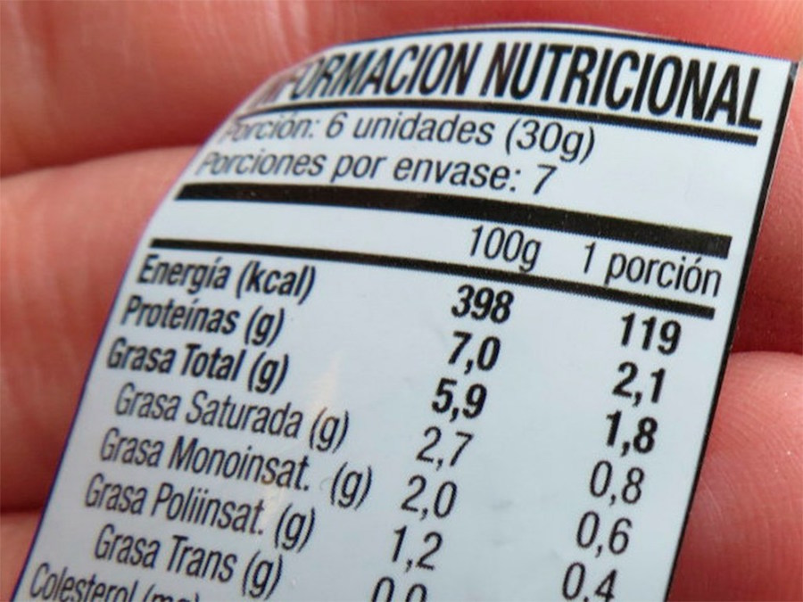

Cómo leer las etiquetas
Publicado por el equipo de la Clínica NutriVida.
Los sellos negros indican que un producto es alto en azúcares, grasas saturadas, sodio o calorías. Sirven como primera señal, pero no reemplazan mirar la tabla nutricional.
En la tabla, revisa siempre a cuántos gramos corresponde la porción. Muchos envases muestran los valores de una porción mucho más chica de la que uno realmente come.
La lista de ingredientes va ordenada de mayor a menor cantidad. Si el azúcar aparece dentro de los tres primeros, el producto tiene bastante más de lo que parece.
Volver a Novedades